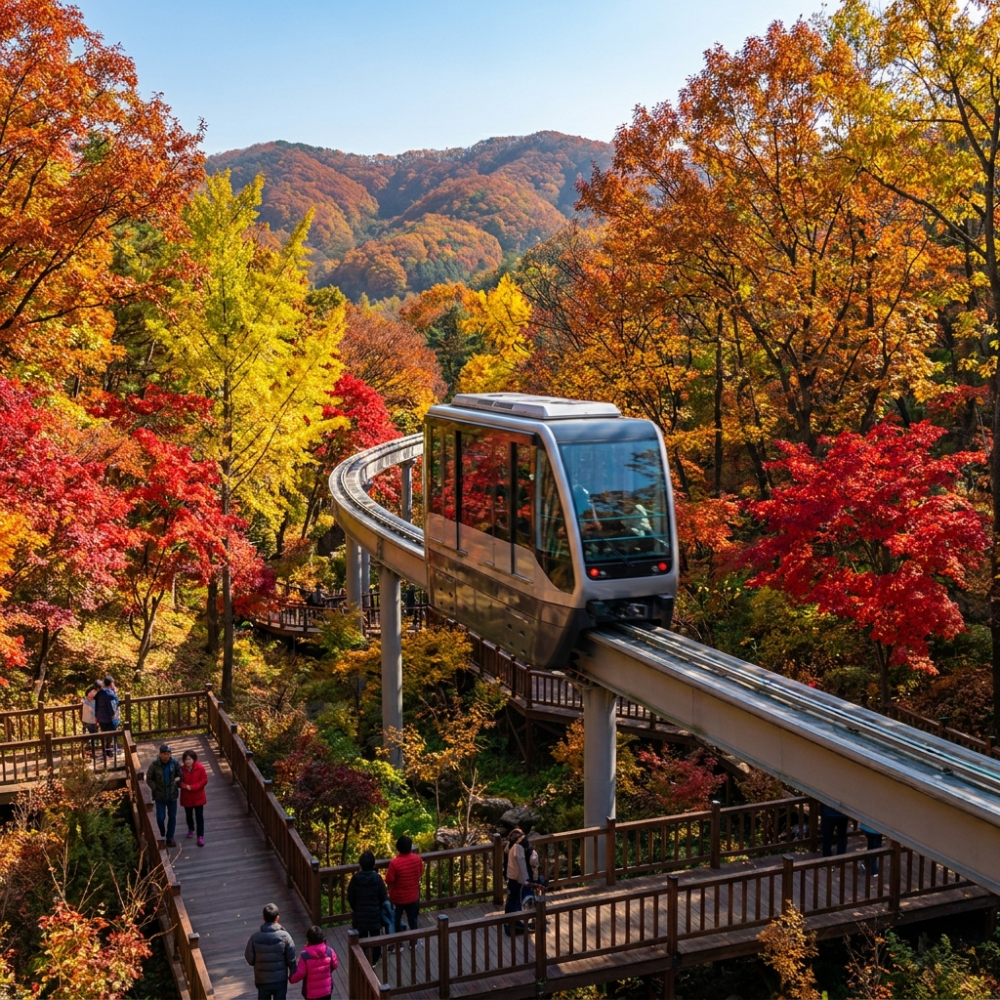
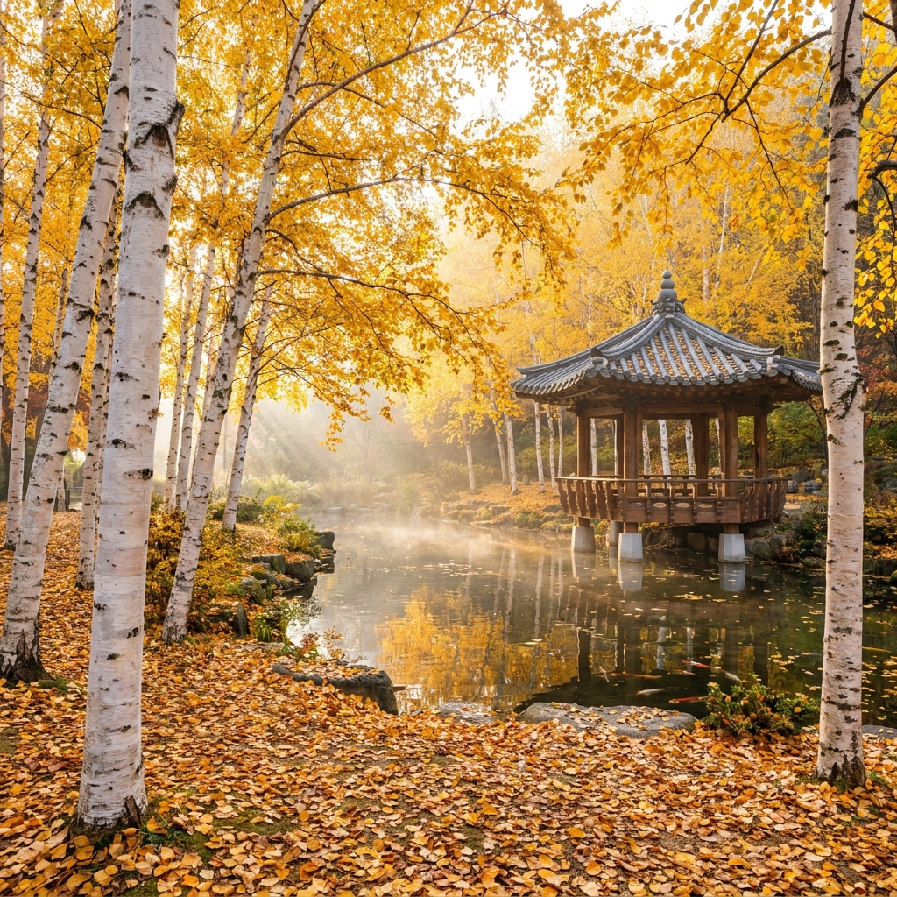
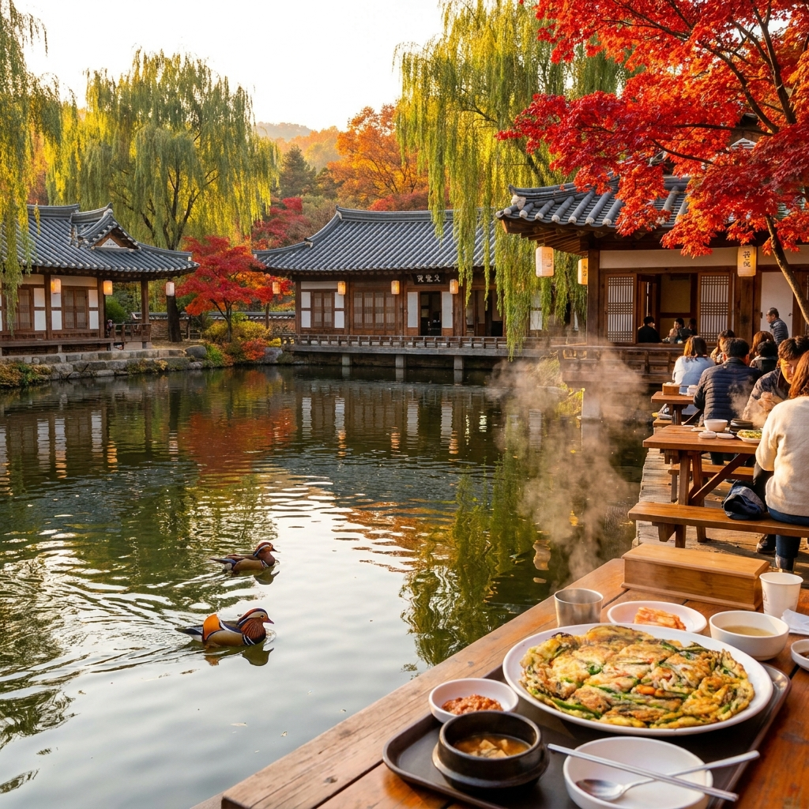

광주 화담숲 가을 단풍 축제 예약 방법과 모노레일 코스 비교 — 취소표 예매 시간과 단풍 절정 시기 체크리스트
경기도 광주 곤지암에 위치한 화담숲은 400여 종이 넘는 다채로운 단풍나무가 붉고 노란빛 터널을 이루는 수도권 최고의 가을 단풍 명소입니다. 화담숲 가을 단풍 축제는 현장 발권이 불가능하며 100% 온라인 사전 예약제로만 운영되기 때문에, 치열한 예매 경쟁을 뚫고 입장권과 모노레일을 확보하는 전략이 필수적입니다.
예매에 실패했더라도 자정 전후와 당일 새벽에 쏟아지는 취소표를 공략하면 얼마든지 명당 시간대 방문이 가능합니다. 오늘 포스팅에서는 2026 화담숲 단풍 축제 예약 성공 팁, 모노레일 1~3구간별 코스 비교 및 탑승 요금표, 단풍 절정 예상 캘린더, 그리고 주차와 슬로프 리프트 무료 이용법까지 한 번에 정리해 드립니다.

화담숲 붉은 단풍나무 숲 사이를 통과하는 순환 모노레일의 가을 정경 / AI 제작 이미지
01 | 2026 화담숲 가을 단풍 축제 운영 기간과 입장 정원
화담숲 가을 단풍 축제는 매년 10월 중순부터 11월 초순까지 약 3주에서 한 달간 집중적으로 열립니다. 2026년 축제는 10월 18일부터 11월 15일까지 매일 운영되며, 쾌적한 관람 환경과 자연 생태 보호를 위해 시간당 입장 인원을 엄격히 통제합니다.
화담숲은 입장 시작 시간인 오전 8시 30분부터 오후 5시까지 20분 단위로 입장 슬롯을 나누어 운영합니다. 하루 총 수용 인원은 약 1만 명 안팎으로 한정되어 있어 주말이나 평일 인기 시간대는 온라인 예매 오픈과 동시에 순식간에 매진됩니다.
가장 중요한 점은 현장 매표소에서 당일 입장권을 절대 판매하지 않는다는 사실입니다. 온라인 사전 예약을 완료하고 발송된 모바일 카카오톡 QR코드 티켓을 소지해야만 게이트를 통과할 수 있으므로 헛걸음하지 않도록 미리 준비해야 합니다.
02 | 온라인 사전 예약 성공 전략과 취소표 풀리는 시간대
화담숲 가을 단풍 축제 예매는 보통 9월 하순 공식 홈페이지를 통해 일괄 오픈됩니다. 접속 대기자가 수만 명에 달하므로 본인 인증을 사전에 완료하고 PC와 모바일 환경을 모두 준비해 두는 것이 기본입니다.
화담숲 예약 실패 시 취소표 줍기 3단계 공략법
1. 밤 11시 50분 ~ 새벽 0시 20분 자정 집중 접속: 방문 전날 취소 수수료가 발생하기 직전 취소 물량이 대량으로 쏟아지는 골든 타임입니다.
2. 방문 당일 새벽 6시 ~ 8시 기습 새로고침: 당일 일정 변경이나 날씨 사정으로 취소되는 표가 실시간으로 시스템에 복구됩니다.
3. 1인 예매 단위 공략: 3~4인 표는 동시에 나오기 어렵지만 1~2인 단위 취소표는 수시로 출현하므로 각자 예매 후 동반 입장을 노리는 것이 유리합니다.
예약 시 결제 기한은 좌석 및 입장 시간을 선점한 후 약 5분 내외로 주어집니다. 따라서 페이코, 네이버페이, 카카오페이 등 간편결제 수단을 미리 연동해 두면 결제 도중 튕겨 나가는 불상사를 방지할 수 있습니다.
03 | 모노레일 1승강장~3승강장 구간별 탑승 시간과 요금 비교표
화담숲 모노레일은 노약자나 어린이를 동반한 가족 단위 관람객에게 특히 인기가 높습니다. 총 3개의 승강장으로 구성되어 있으며 승강장 간 편도 이동 또는 전체를 둘러보는 순환 코스를 선택할 수 있습니다.
모노레일 승차권 역시 온라인으로 입장권과 함께 패키지로 사전 예약할 수 있으며, 잔여석에 한해 1승강장 무인 발권기에서 당일 현장 구매가 가능합니다. 하지만 단풍 성수기에는 오전 일찍 현장 모노레일 티켓도 마감되므로 사전 예약을 권장합니다.
| 탑승 구간 |
소요 시간 |
성인 요금 |
어린이 요금 |
추천 관람 대상 |
| 1구간 (1승강장 → 2승강장) |
약 5분 |
5,000원 |
4,000원 |
오르막 구간 회피 후 하산길 완주 희망자 |
| 2구간 (1승강장 → 3승강장) |
약 12분 |
7,000원 |
6,000원 |
완만한 분재원 및 암석원 중심 산책 희망자 |
| 순환선 (1승강장 → 1승강장) |
약 20분 |
9,000원 |
7,000원 |
도보 이동이 어려운 노약자 및 영유아 동반객 |
단풍의 진수를 맛보려면 1구간(1→2승강장)만 모노레일을 타고 가파른 초입 오르막을 건너뛴 뒤, 2승강장부터 1승강장 입구까지 천천히 걸어 내려오며 포토존을 즐기는 코스가 가장 만족도가 높습니다.

새하얀 자작나무와 황금빛 단풍이 연못에 반영되는 화담숲 자작나무원 전경 / AI 제작 이미지
04 | 전체 도보 완주 코스 vs 모노레일 복합 코스 난이도 비교
화담숲은 전 구간이 완만한 데크길과 포장로로 조성되어 유모차나 휠체어도 통행이 가능한 무장애 트레킹 코스입니다. 그러나 전체 둘레길의 길이가 약 5.3km에 달해 도보로 완주하려면 적절한 체력 안배가 필요합니다.
전체 도보 코스를 선택할 경우 성인 보통 걸음 기준으로 약 2시간에서 2시간 30분 정도 소요됩니다. 초입의 이끼원과 약속의 다리, 자작나무숲까지 이어지는 구간이 완만한 오르막으로 구성되어 있어 초반 체력 소모가 다소 있는 편입니다.
반면 모노레일 1구간을 탑승한 뒤 2승강장(화담숲 최정상부 전망대 부근)에서 하차하여 양치식물원, 분재원, 암석·하경정원, 전통담장길로 이어지는 내리막길을 걷는 복합 코스는 약 1시간 30분 내외로 부담 없이 관람을 마칠 수 있습니다.
05 | 화담숲 16개 테마원 중 단풍 절정 포토존 명당 4선
화담숲 내부에는 총 16개의 테마원이 조성되어 있으며, 각 테마원마다 단풍나무의 품종과 주변 수목의 조화가 달라 특색 있는 인생 사진을 남길 수 있습니다.
첫 번째 명당은 '약속의 다리(하트 자물쇠 다리)'입니다. 다리 아래로 모노레일이 지나가는 순간 붉은 단풍 터널과 열차가 한 프레임에 담겨 가장 많은 카메라가 모여드는 대표 포인트입니다.
두 번째는 '자작나무원'입니다. 1,000여 그루가 넘는 하얀 자작나무 줄기와 바닥에 수북이 쌓인 황금빛 단풍 낙엽이 이국적인 대비를 자아내어 감성적인 스냅 사진을 연출하기에 최적입니다.
세 번째는 '분재원과 암석·하경정원'입니다. 수령 수백 년의 고목 분재들과 자연 암석 틈새로 흘러내리는 폭포, 그리고 타오르는 듯한 내장단풍나무가 어우러져 한 폭의 진경산수화를 감상하는 듯한 감동을 줍니다.
네 번째는 출구 직전에 위치한 '원앙연못과 운수휴원(전통 한옥 주막)'입니다. 연못 위를 유유히 헤엄치는 원앙 떼와 기와지붕 처마 위로 흐드러진 붉은 단풍, 그리고 연못에 비친 가을 하늘의 반영이 완벽한 피날레를 장식합니다.
06 | 2026 화담숲 가을 단풍 첫 물듦과 절정 시기 예측 캘린더
산림청의 2026년 가을 단풍 예측 지도에 따르면, 경기 남부 및 광주 노고봉 자락의 첫 단풍은 10월 12일경 시작될 것으로 관측되었습니다. 산림의 약 20%가 물드는 첫 단풍 시기를 지나 80% 이상 물드는 절정기는 예년보다 2~3일 늦은 10월 26일부터 11월 5일 사이로 전망됩니다.
2026 화담숲 단풍 주차별 관람 포인트
- 10월 18일 ~ 10월 23일 (초입기): 초록빛과 노란빛, 주황빛이 교차하는 그라데이션 단풍. 비교적 덜 혼잡하며 쾌적한 숲 산책 가능.
- 10월 24일 ~ 11월 4일 (절정기): 화담숲 전역이 붉은빛으로 타오르는 연중 최고의 하이라이트. 모노레일과 포토존 대기열 최대치.
- 11월 5일 ~ 11월 12일 (만추기): 붉은 낙엽 카펫이 데크길을 덮는 고즈넉한 늦가을 풍경. 바람에 흩날리는 단풍비 연출.
화담숲은 단풍나무 품종이 다양하여 내장단풍, 당단풍, 청단풍, 홍단풍 등이 순차적으로 물들기 때문에 절정기 전후 1주일의 오차 범위 내에서도 충분히 화려한 장관을 즐길 수 있습니다.

화담숲 원앙연못과 고즈넉한 전통 한옥 주막 뒤로 펼쳐진 가을 단풍 풍경 / AI 제작 이미지
07 | 자차 이용 시 곤지암리조트 주차장 슬로프 리프트 무료 이용법
단풍 축제 기간 주말에는 오전 9시 이전부터 곤지암리조트 진입로 일대에 극심한 교통 정체가 발생합니다. 자차를 이용할 경우 주차장 선택과 이동 수단을 미리 알아두어야 30분 이상의 시간을 절약할 수 있습니다.
화담숲 바로 앞 주차장은 주차 면수가 적어 오전 8시 30분 이전에 대부분 만차됩니다. 만차 시에는 곤지암리조트 시계탑 앞 대형 주차타워나 리조트 야외 주차장으로 안내받게 됩니다.
리조트 주차타워에 주차한 후 화담숲 매표소까지 도보로 걸어 올라가면 약 15~20분 정도 가파른 언덕을 올라야 합니다. 하지만 리조트 스키 슬로프 좌측에서 운행하는 무료 리프트를 이용하면 화담숲 매표소 바로 앞까지 편안하게 공중 이동할 수 있습니다. 리프트 탑승 대기 줄이 길지 않다면 무료 리프트를 적극 활용하시는 것을 추천합니다.
08 | 대중교통으로 찾아가는 법 — 경강선 곤지암역 택시 및 버스 환승
주말 교통 체증과 주차 스트레스를 피하고 싶다면 대중교통 이용이 훨씬 쾌적한 선택이 될 수 있습니다. 수도권 전철 경강선을 이용하면 판교역이나 이매역에서 곤지암역까지 약 20~25분 만에 도착합니다.
곤지암역에서 화담숲 이동 대중교통 2가지 방법
1. 곤지암역 택시 승강장 이용: 역사 1번 출구 앞 택시 승강장에서 탑승 시 화담숲 매표소까지 약 10~12분 소요되며 요금은 약 8,500원~10,000원 선입니다. 축제 기간에는 합승 및 택시 대기열이 생길 수 있습니다.
2. 시내버스 및 리조트 셔틀버스: 곤지암역 정류장에서 광역버스 및 시내버스(광주 300번, 1113-1번 등 연계 지선)를 타고 곤지암리조트 입구에서 하차 후 도보 또는 셔틀버스로 환승합니다. 리조트 순환 셔틀버스는 20~30분 간격으로 운행됩니다.
귀가 시에도 카카오택시 호출이 원활하지 않을 수 있으므로 곤지암역으로 돌아가는 노선 버스 시간표를 매표소 인포메이션 데스크에서 미리 확인해 두시면 좋습니다.
09 | 가을 단풍 관람 시 반입 금지 물품과 필수 준비물 체크리스트
화담숲은 자연 식생 보존을 위해 관람객의 소지품 검사를 철저히 진행합니다. 무심코 가져왔다가 입구 보관함에 맡겨야 하거나 압수될 수 있으므로 규정을 숙지해야 합니다.
| 구분 |
반입 가능 품목 |
반입 절대 금지 품목 |
| 음식물 |
물, 뚜껑 있는 무색 음료, 영유아 이유식 |
주류, 김밥, 도시락, 과일, 과자류 일체 |
| 놀이·촬영 기구 |
스마트폰, 핸드헬드 카메라 |
삼각대, 모노포드, 드론, 돗자리, 텐트 |
| 반려동물 및 기타 |
시각장애인 안내견 |
일반 반려동물, 킥보드, 자전거, 드론, 인라인 |
특히 삼각대와 돗자리 반입이 전면 금지되어 있으므로 사진 촬영 시 가벼운 손떨림 보정 기능이 있는 스마트폰이나 카메라를 챙기셔야 합니다. 경사진 산책로를 2시간 이상 걸어야 하므로 편안한 운동화와 일교차에 대비한 얇은 겉옷은 필수입니다.
10 | 화담숲 번지없는주막 파전 이용 팁과 주변 맛집 동선
화담숲 관람을 마치고 출구로 나오면 고소한 기름 냄새가 코를 자극하는 한옥 식음 시설 '번지없는주막'을 만나게 됩니다. 원앙연못을 내려다보는 야외 평상 테라스 자리는 단풍 시즌 최고의 쉼터입니다.
대표 메뉴인 해물파전(약 22,000원)과 병천순대, 두부김치, 그리고 시원한 식혜와 막걸리는 고단한 트레킹 뒤의 피로를 단숨에 씻어줍니다. 성수기 점심시간(12시~14시)에는 키오스크 주문 대기와 자리 선점 경쟁이 매우 치열하므로, 오전 11시 30분 이전이나 오후 2시 30분 이후에 이용하시는 것이 훨씬 여유롭습니다.
화담숲 외부에서 식사할 계획이라면 곤지암 지역의 명물인 소머리국밥 거리나 곤지암천 변의 담백한 보리밥집, 오리구이 전문점들을 연계하면 든든하고 완벽한 가을 당일치기 미식 여행 코스를 완성할 수 있습니다.
📌 함께 읽으면 좋은 가을 나들이 & 생활 팁
#화담숲단풍축제
#화담숲예약방법
#화담숲취소표
#화담숲모노레일
#화담숲단풍시기
#곤지암화담숲
#화담숲주차꿀팁
#수도권단풍명소
#가을당일치기여행
#화담숲포토존